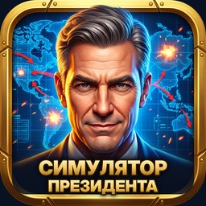
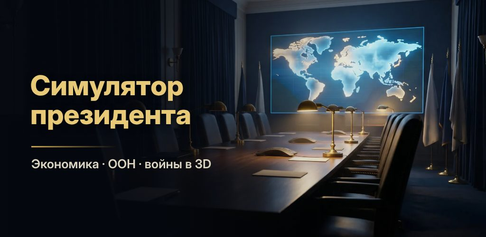
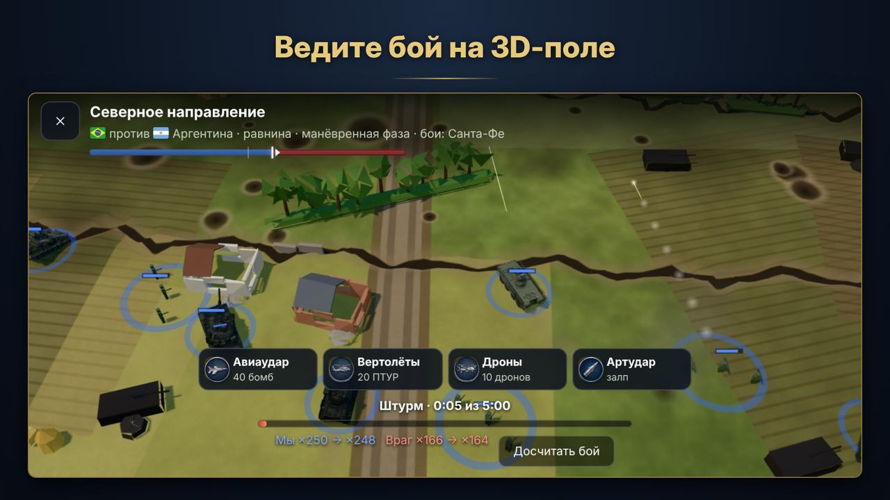
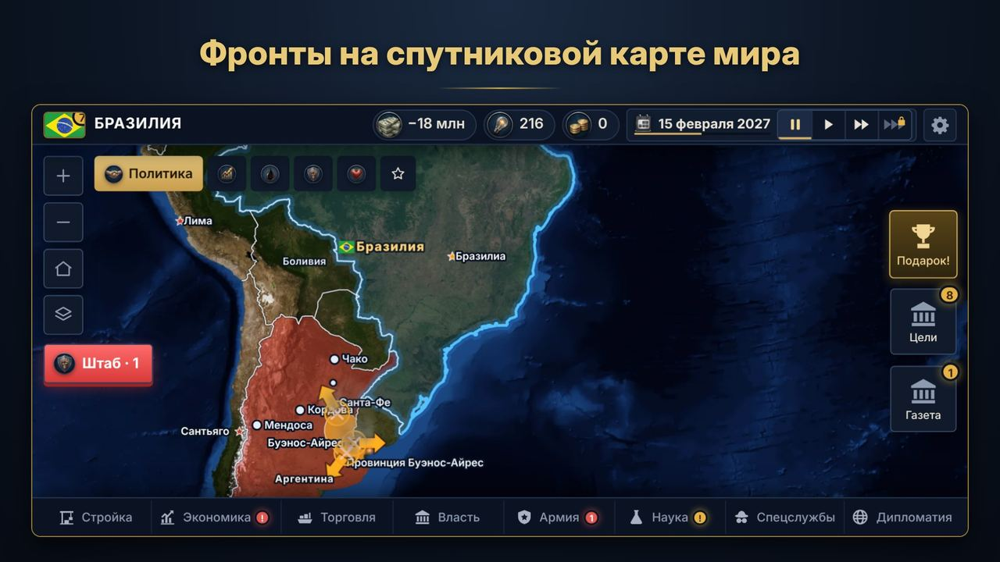
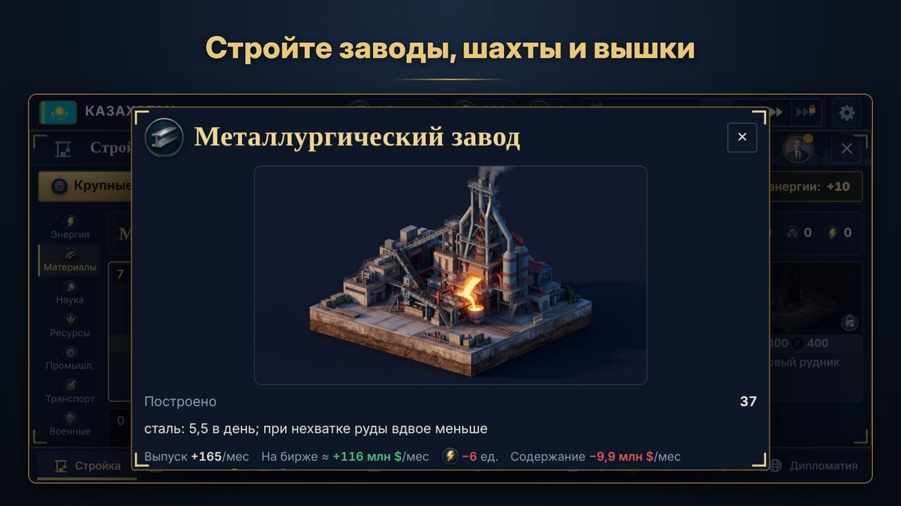
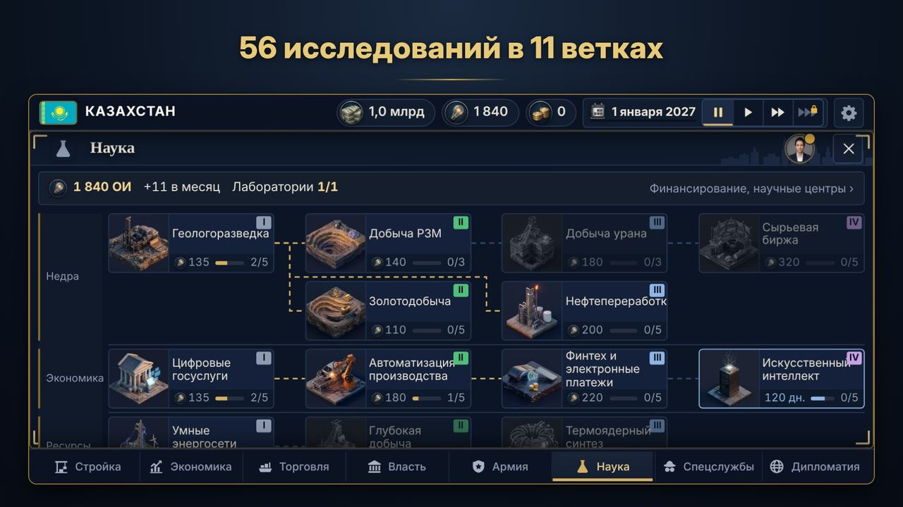
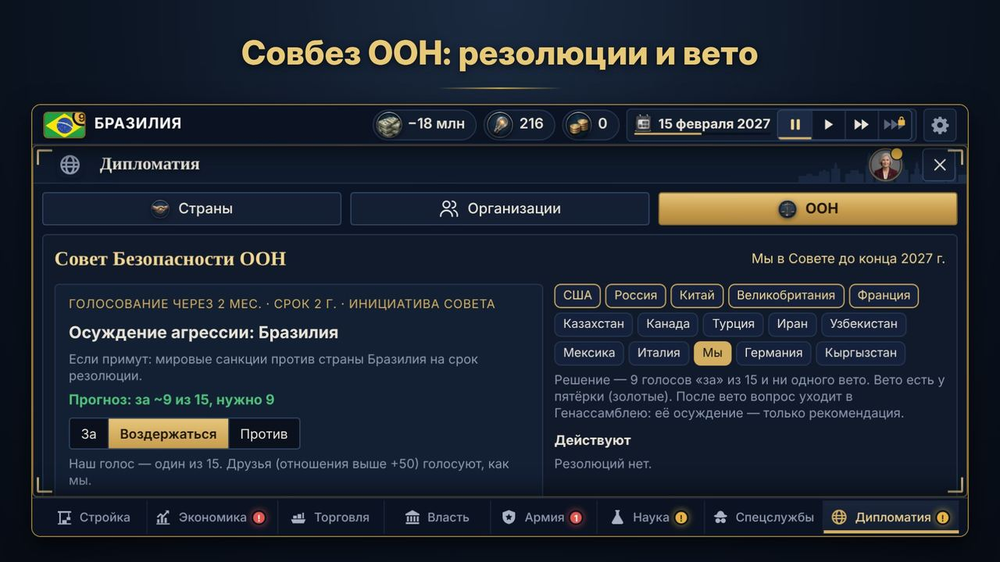
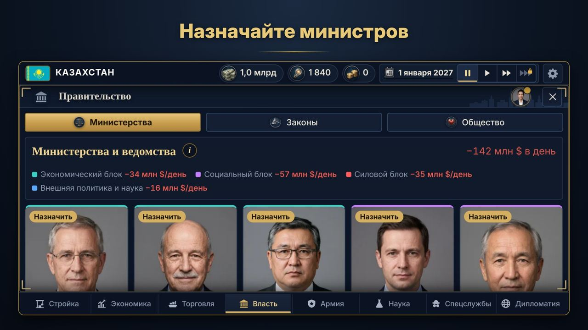

Симулятор президента
President Simulator · ANNUR GAMES
Возглавьте реальную страну: экономика, наука, ООН, армия и войны в 3D
- Платформа: Android
- Жанр: стратегия
- Языки: русский, English
- Статус: готовится к выходу в RuStore







Об игре
«Симулятор президента» — стратегия, в которой вы возглавляете реальную страну. Стройте заводы и шахты, собирайте налоги, торгуйте, договаривайтесь с другими странами и командуйте армией.
ЭКОНОМИКА
- Ресурсы дают здания: лесопилки, металлургические заводы, нефтяные вышки, рудники, заводы микросхем.
- Налоги, бюджет, кредиты, пенсии и зарплаты — каждую монету придётся считать.
- Торговля и сырьевая биржа: ваши грузы идут по карте мира.
НАУКА
- 56 исследований в 11 ветках: от геологоразведки до искусственного интеллекта и термоядерного синтеза.
АРМИЯ И ВОЙНА
- Танки, артиллерия, ПВО, авиация, вертолёты и ударные дроны — свои заводы или закупки за рубежом.
- Фронты на карте мира и трёхмерное поле боя: вы отдаёте приказы, вызываете подкрепления и удары с воздуха.
- Побеждённые страны присоединяются к вашей, и граница на карте меняется.
ООН И МИРОВАЯ ПОЛИТИКА
- Совет Безопасности голосует за санкции, эмбарго и прекращение огня; постоянные члены могут наложить вето.
- Военные блоки защищают своих членов. Мир следит за завоевателем.
- Спецслужбы: агентурная сеть и тайные операции.
МИР ПОД РУКОЙ
- 31 крупная держава и 145 малых стран. Шесть путей к победе: военная, экономическая, политическая, идеологическая, научная и «Мир под рукой».
Для игры нужно подключение к интернету. Это игра: она не связана ни с одним правительством или государственной организацией.
President Simulator
A strategy game for Android where you lead a real country: build industry, collect taxes, trade, negotiate with other nations, vote in the UN and command your army on a 3D battlefield. 31 major powers, 145 smaller countries and six ways to win.
Status: coming to RuStore. This is a game; it is not affiliated with any government or state organization.
Разработчик
- Студия
- ANNUR GAMES
- Почта
- annurgames.gg@gmail.com
- Telegram
- t.me/annurgames
- Документы
- Политика конфиденциальности · Privacy policy